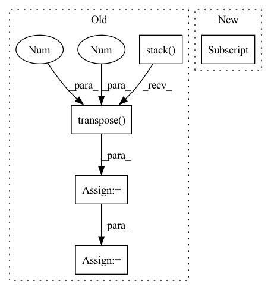

Pattern ID :2285

Before Change
// Back to batch first
attn_scores = torch.stack(attn_scores).transpose(0, 1)
mel_outputs = torch.stack(mel_outputs).transpose(0, 1).contiguous()
stop_tokens = torch.stack(stop_tokens).transpose(0, 1).squeeze(2)
// (B, T", mel_dim*r) -> (B, T, mel_dim)
mel_outputs = mel_outputs.reshape(B, -1, self.mel_dim)
return mel_outputs, stop_tokens, attn_scores
After Change
current_input = initial_input
while True:
if t > 0:
current_input = mel_outputs[-1][:, -1, :] if greedy else inputs[t - 1]
t += self.r
// Prenet
In pattern: SUPERPATTERN
Frequency: 3
Non-data size: 5
Instances
Fragment ID: 7946553
Project Name: thuhcsi/tacotron
Commit Name: fea9ec535ec373aad564646f4f292fbee0217c29
Time: 2021-03-18
Author: johnson.tsing@gmail.com
File Name: model/tacotron.py
M Class Name: Decoder
N Class Name: Decoder
M Method Name: forward(4)
N Method Name: forward(4)
M Parent Class: nn.Module
N Parent Class: nn.Module
M File Name: model/tacotron.py
N File Name: model/tacotron.py
M Start Line: 87
M End Line: 187
N Start Line: 88
N End Line: 180
'>
Before Change
h4 = F.elu(h4)
// h = torch.stack([h1, h2, h3, h4], dim=1)
h = torch.stack([h1, h4], dim=1)
attn_weights = F.softmax(self.gnn_attns[l](h), dim=1)
attn_weights = attn_weights.transpose(-1, -2)
print("attn_weights.shape:", attn_weights.shape)
print("h: ",h.shape)
h = torch.bmm(attn_weights, h)[:, 0]
h = self.norm_layers[5 * l + 4](h)
h = self.dropout(h)
After Change
h1 = self.norm_layers[5 * l](h1)
h1 = F.elu(h1)
h2 = self.graphsage[l](blocks[l], h)
h2 = self.norm_layers[5 * l + 1](h2)
h2 = F.elu(h2)
'>
Fragment ID: 7946557
Project Name: langgege-cqu/maxp_dgl
Commit Name: 4c0c32b85678b9d29f17c435092a48969ab58f7f
Time: 2021-11-10
Author: 814112480@qq.com
File Name: maxp_model/unimp.py
M Class Name: GNNModel
N Class Name: GNNModel
M Method Name: forward(4)
N Method Name: forward(4)
M Parent Class: nn.Module
N Parent Class: nn.Module
M File Name: maxp_model/unimp.py
N File Name: maxp_model/unimp.py
M Start Line: 185
M End Line: 205
N Start Line: 183
N End Line: 209
'>
Before Change
// Back to batch first
attn_scores = torch.stack(attn_scores).transpose(0, 1)
mel_outputs = torch.stack(mel_outputs).transpose(0, 1).contiguous()
stop_tokens = torch.stack(stop_tokens).transpose(0, 1).squeeze(2)
// (B, T", mel_dim*r) -> (B, T, mel_dim)
mel_outputs = mel_outputs.reshape(B, -1, self.mel_dim)
return mel_outputs, stop_tokens, attn_scores
After Change
current_input = initial_input
while True:
if t > 0:
current_input = mel_outputs[-1][:, -1, :] if greedy else inputs[t - 1]
t += self.r
// Prenet
'>
Fragment ID: 7946559
Project Name: thuhcsi/tacotron
Commit Name: fea9ec535ec373aad564646f4f292fbee0217c29
Time: 2021-03-18
Author: johnson.tsing@gmail.com
File Name: model/tacotron2.py
M Class Name: Decoder
N Class Name: Decoder
M Method Name: forward(4)
N Method Name: forward(4)
M Parent Class: nn.Module
N Parent Class: nn.Module
M File Name: model/tacotron2.py
N File Name: model/tacotron2.py
M Start Line: 127
M End Line: 224
N Start Line: 127
N End Line: 216